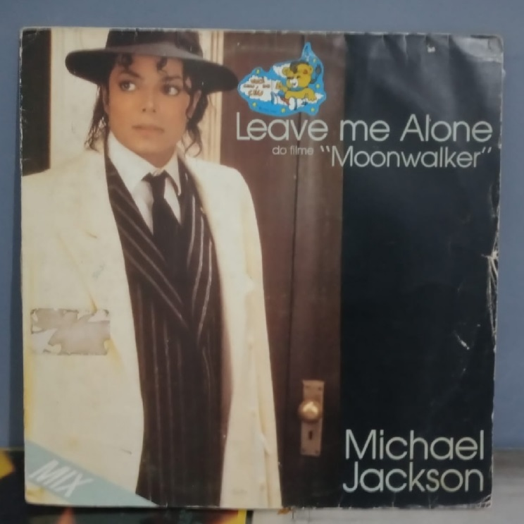
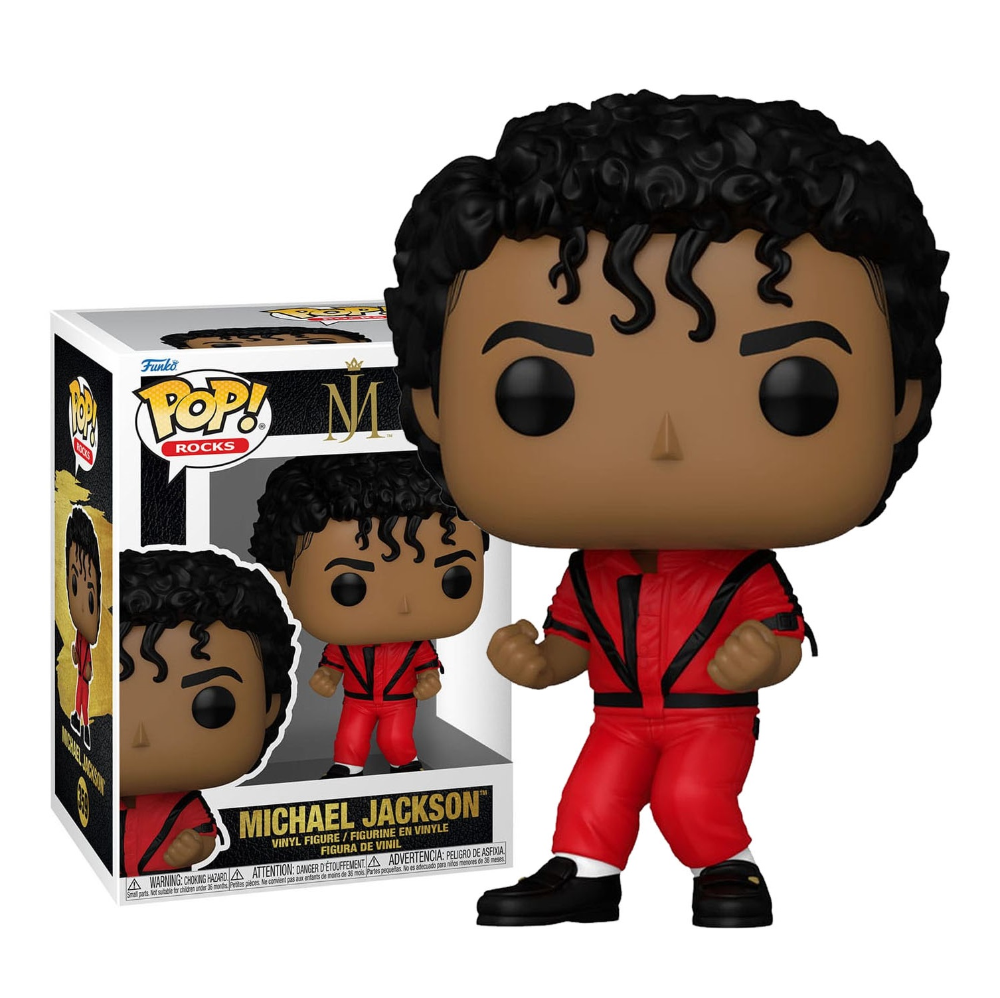
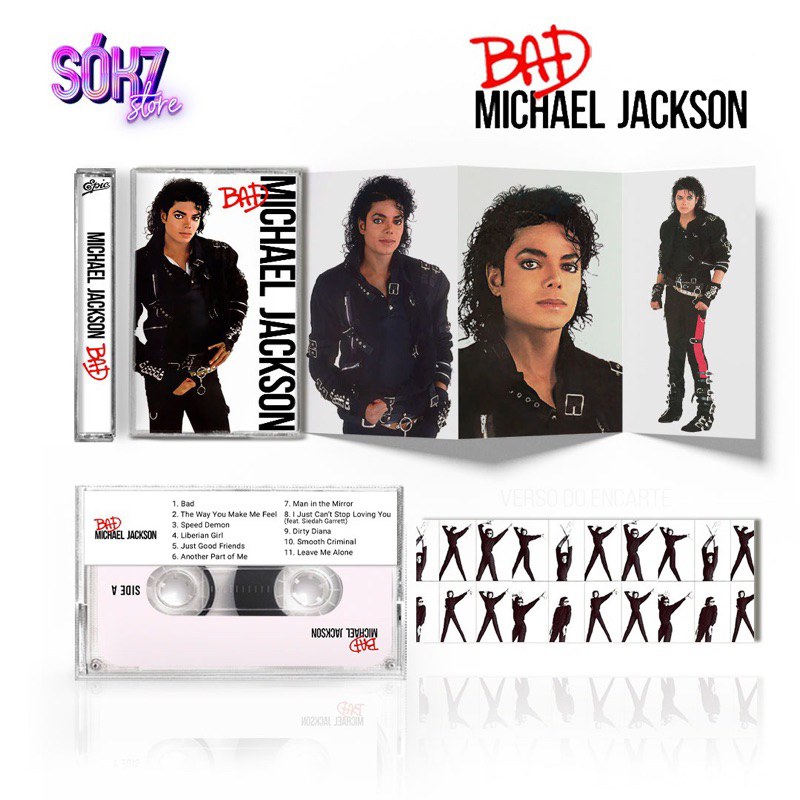

<!-- Grid Dos Produtos -->
<div class=container-fluid style="background-color:rgb(146, 213, 213)">
    <div class="container">
        <h3 class="text-Left"><br>Busca: <i>Michael Jackson</i></h3><br>  
        <div class="row justify-content-center">
        <!-- Primeira Foto -->
            <div class="col-md-3" style="margin: 20px;">
                <a href="./produto-detalhe" class="d-block text-decoration-none">
                    <br>
                </a>
                <p class="categoria">Acessórios</p>
                <p class="produto">Réplica Jaqueta Thriller<br>
                <p class="preco">R$ 640,00</p><br>
                <p class="descricao">Você quer ter um pedaço do legado de Michael Jackson e fazer uma declaração de moda única? Apresentamos a Jaqueta "Thriller" - a peça de vestuário icônica que celebra o álbum mais lendário da história da música. lançado no final de 1982. Este álbum é amplamente reconhecido como um dos álbuns mais influentes e vendidos de todos os tempos e tem um lugar de destaque na história da música.</p>
                <a href="./produto-detalhe" class="d-block text-decoration-none">
                    <button class="btn btn-primary" type="button">Conferir</button>
                </a>
            </div>
    
            <!-- Segunda Foto -->
            <div class="col-md-3" style="margin: 20px;">
                <a href="./produto-detalhe" class="d-block text-decoration-none">
                    <br>
                </a>
                <p class="categoria">Disco de Vinil</p>
                <p class="produto">Michael Jackson | Leave Me Alone<br>
                <p class="preco">R$ 70,00</p>
                <p class="descricao">"Leave Me Alone" é uma das canções mais notáveis do icônico artista Michael Jackson, mas, vale notar que ela não faz parte de um álbum específico de Jackson. Em vez disso, "Leave Me Alone" foi lançada como um single em 1989, fazendo parte da coletânea "Michael Jackson's Bad" e depois sendo incluída na compilação</p>
                <button class="btn btn-primary" data-bs-toggle="offcanvas" data-bs-target="#carrinho">Comprar</button>
            </div>

            <!-- Terceira Foto -->
            <div class="col-md-3" style="margin: 20px;">
                <a href="./produto-detalhe" class="d-block text-decoration-none">
                    <br>
                </a>
                <p class="categoria">Acessórios</p>
                <p class="produto">Funk Pop! Michael Jackson Thriller<br>
                <p class="preco">R$ 120,00</p>
                <p class="descricao">Este Funko Pop! é uma figura de vinil colecionável que captura a icônica imagem de Michael Jackson. Ele apresenta os traços distintivos do Rei do Pop, incluindo seu estilo de cabelo, óculos de sol, roupas e até mesmo seus detalhes de moda característicos, como luvas brancas e jaqueta brilhante. A figura é esculpida em detalhes impressionantes e em escala reduzida, geralmente com cerca de 10 cm de altura.</p>
                <button class="btn btn-primary" data-bs-toggle="offcanvas" data-bs-target="#carrinho">Comprar</button>
            </div>

            <!-- Quarta Foto -->
            <div class="col-md-3" style="margin: 20px;">
                <a href="./produto-detalhe" class="d-block text-decoration-none">
                    <br>
                </a>
                <p class="categoria">Fita k7</p>
                <p class="produto">Michael Jackson | BAD<br>
                <p class="preco">Preço: R$50</p><br>
                <p class="descricao">BAD!!! aqui se encontra um dos álbum mais icônicos do glororiso Michael Jackson lançado em 1987. Este álbum é amplamente reconhecido como um dos marcos mais importantes na história da música pop e representou um ponto de virada na carreira de Jackson, consolidando-o como o "Rei do Pop"</p>
                <button class="btn btn-primary" data-bs-toggle="offcanvas" data-bs-target="#carrinho">Comprar</button>
            </div>

        </div> 
            
        <div class="offcanvas offcanvas-end" id="carrinho">
            <div class="offcanvas-header">
                <h1 class="offcanvas-title">Carrinho</h1>
                <button type="button" class="btn-close" data-bs-dismiss="offcanvas"></button>
            </div>
            <div class="offcanvas-body">
            <p>Seu produto foi adicionado ao carrinho.</p>
            <a href="./cesta" class="d-block text-decoration-none"><br>
                <button class="btn btn-primary" type="button">Ver meu carrinho</button>
            </a><br>
            <button type="button" class="btn" data-bs-dismiss="offcanvas" style="color:black;">Continuar comprando</button>
            </div>
        </div>
            
    </div>  
</div>
  
  
